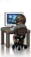
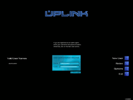
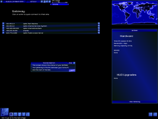
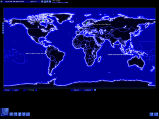

Uplink
Dieser Artikel wurde für die folgenden Ubuntu-Versionen getestet:
Ubuntu 14.04 Trusty Tahr
Zum Verständnis dieses Artikels sind folgende Seiten hilfreich:

Uplink  spielt im Jahre 2010. Als Hacker meldet man sich bei der Uplink Corporation an und hackt sich, im Auftrag des Unternehmens, weltweit in Computersysteme ein. Der Schwierigkeitsgrad, der Verdienst und das Ansehen in der Hackerszene steigen im Laufe des Spielverlaufs. Bricht man Anfangs noch in kleine Server ein um dort Daten zu manipulieren, benötigt man zum Knacken der Hochsicherheitssysteme eine entsprechend aufgerüstete Hardware.
spielt im Jahre 2010. Als Hacker meldet man sich bei der Uplink Corporation an und hackt sich, im Auftrag des Unternehmens, weltweit in Computersysteme ein. Der Schwierigkeitsgrad, der Verdienst und das Ansehen in der Hackerszene steigen im Laufe des Spielverlaufs. Bricht man Anfangs noch in kleine Server ein um dort Daten zu manipulieren, benötigt man zum Knacken der Hochsicherheitssysteme eine entsprechend aufgerüstete Hardware.
Uplink ist das erste Spiel von Introversion Software und erschien 2001 - Darwinia und Defcon sind weitere Titel von Introversion Software.
Uplink wird sowohl als CD-Version als auch zu Download angeboten. Seit März 2011 ist es auch über das Software-Center zu erwerben.
|  |  |  |
| Menü | Tutorial | Spielszene |
Installation¶
CD-Version¶
Nach dem Einlegen des Datenträgers in den Ordner linux wechseln und die Datei uplink.tar.gz in das Homeverzeichnis entpacken [1] - z.B. nach ~/Spiele/Uplink. Anschließend muss das Spiel gepatcht werden.
Introversion¶
Zur Installation der Version von Introversion Software  muss man erst einmal an die benötigten Dateien gelangen [4]:
muss man erst einmal an die benötigten Dateien gelangen [4]:
sh uplink-complete-1.54DOWNLOAD.sh --keep --noexec
Nun wechselt man in den Ordner uplink, verschiebt den Starter in den Basisordner
mv bin/Linux/x86/uplink .
und löscht überflüssige Daten:
rm -r bin setup.*
Das Spiel kann nun über uplink aus dem Installationsverzeichnis heraus gestartet [2] werden.
The Humble Bundle¶
Das Spiel aus dem The Humble Bundle als .deb-Paket herunterladen und installieren [5]. Über den Menüpunkt "Spiele -> Uplink" kann es gestartet werden.
Ubuntu Software-Center¶
Uplink kann über das Software-Center käuflich erworben werden. Dazu ist eine Registrierung bzw. ein Zugang über Ubuntu One erforderlich, welchen man sich aber auch während des Zahlungsprozesses über das Software-Center anlegen kann. Anschließend wird das Spiel automatisch heruntergeladen und installiert. Für zukünftige Updates wird eine neue Paketquelle hinzugefügt.
Patch¶
Um das Spiel auf den aktuellen Stand zu bringen benötigt man den Patch 1.54 (linuxpatch1.54.tar.gz) oder 1.55 (uplink-patch-1.55.tar.gz).
introversion.co.uk
Die .tar.gz ist über den “Alternative Mirror” zu erreichen.
Nach dem Entpacken [1] des Patch 1.54 in das Verzeichnis Spiele/Uplink müssen noch die Dateien mit der Endung .dat in das Unterverzeichnis lib verschoben werden. Dabei werden schon vorhandene Dateien überschrieben. Dieser Schritt entfällt bei dem Patch 1.55.
Hinweis:
Der Patch 1.55 wird von Introversion aus unbekannten Gründen nicht mehr zum Download angeboten, ist aber über den zweiten Link zu beziehen. Dieser behebt einige Fehler, die in Version 1.54 noch enthalten sind.
Danach kann das Spiel mit dem Ausführen der Datei uplink im Installationsverzeichnis gestartet [2] oder dem Menü hinzugefügt [3] werden.
Modifikationen¶
Es gibt eine Vielzahl von Möglichkeiten das Spiel zu modifizieren. Neben grafischen Modifikationen können unter anderem weitere Namen und zusätzliche Unternehmen hinzugefügt werden. Die Mods sind einfach zu handhaben. Sie werden heruntergeladen, entpackt [1] und anschließend in den richtigen Ordner des Installationsverzeichnisses kopiert. Dieser muß ggf. noch angelegt werden. Einige Modifikationen enthalten Daten die in unterschiedlichen Ordnern abgelegt werden. Die Vorgehensweise ist der jeweiligen readme.txt zu entnehmen.
Hinweis:
Da viele Uplink-Modifikationen nicht mehr gepflegt werden, ist es Glücksache, ob sie mit den letzten Versionen von Uplink und auf heutigen Betriebssystemen laufen. Einige Modifikationen stehen darüber hinaus nur Windows-Nutzern zur Verfügung.
Mods sind u.a. hier erhältlich:
| Pfade | ||
| Modifikation | Ordner | Bemerkung |
| Themes | ~/Spiele/Uplink/mods | Im Spiel kann das Theme unter "Options -> Themes" geändert werden. |
| Graphics | ~/Spiele/Uplink/mods/graphics | |
| Music | ~/Spiele/Uplink/mods/music | |
| Sounds | ~/Spiele/Uplink/mods/sounds | |
| Data Files | ~/Spiele/Uplink/mods/data | Zusätzliche Gateways und LANs. |
Bonus¶
The Bonus Disk¶
Auf der Herstellerseite kann eine Bonus Disk heruntergeladen werden. Nachdem die Datei Bonus_CD.zip entpackt [1] wurde kann man unter anderem Bilder, Wallpaper, Artikel und Hintergrundinformationen rund um das Spiel betrachten.
Code¶
Als eine Hommage an die Spieleklassiker der 80er Jahre liegt jeder Spielebox eine Karte mit einem Kopierschutz bei. Jedesmal wenn ein neues Spiel begonnen wird muss ein Code von dieser Karte eingegeben werden. Für die Downloadversionen kann die Karte von der Herstellerseite als PDF heruntergeladen werden. Diese Karte ist allerdings nicht so schick wie die Originalkarte.
Demo¶
Ein Demo kann von introversion.co.uk heruntergeladen und wie hier beschrieben installiert werden.
Tastenkürzel¶
| Tastenkürzel | |
| Taste(n) | Funktion |
| Esc | Menü aufrufen - Grafik-, Steuer- und Soundoptionen sowie Sprache einstellen. |
| F9 | Screenshot aufnehmen - diese werden im Homeverzeichnis unter .uplink gespeichert. |

Infobox¶
| Uplink | |
| Originaltitel: | Uplink - Trust is a weakness |
| Genre: | Hacker-Simulation |
| Sprache: | |
| Veröffentlichung: | 2001 |
| Publisher: | Introversion Software |
| Systemvoraussetzungen: | 300 MHz Prozessor - 32 MB RAM - 25 MB Festplattenspeicher - OpenGL-fähige Grafikkarte |
| Medien: | CD (1) / Download |
| Strichcode / EAN / GTIN: | 5060043690021 |
| Läuft mit: | nativ |
- Erstellt mit Inyoka
-
 2004 – 2017 ubuntuusers.de • Einige Rechte vorbehalten
2004 – 2017 ubuntuusers.de • Einige Rechte vorbehalten
Lizenz • Kontakt • Datenschutz • Impressum • Serverstatus -
Serverhousing gespendet von